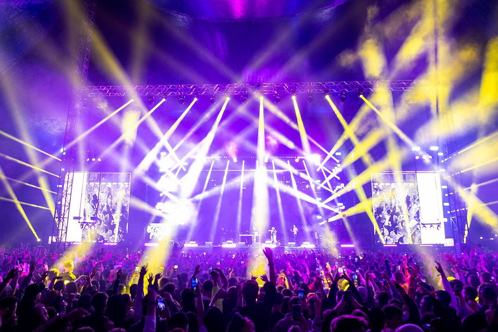
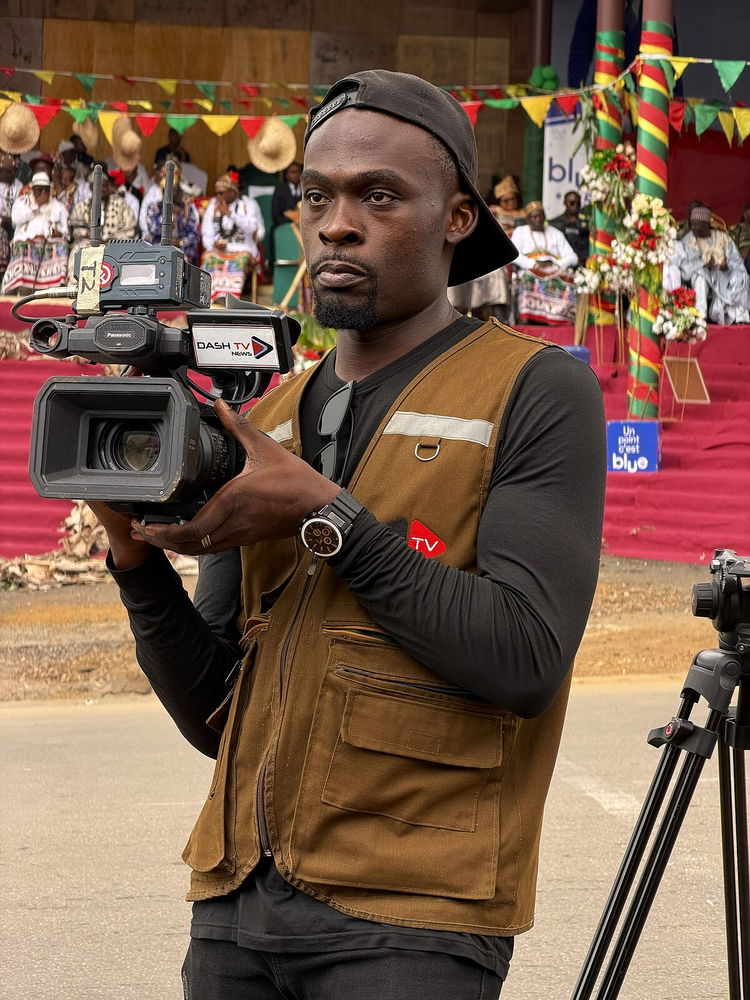

What It Takes to Produce a Live Show
When the house lights drop and the first chord rings out, the audience sees only the finished product of weeks or even months of preparation. Long before the doors open, production managers build detailed schedules that coordinate trucking, rigging, staging, power, and crew calls down to the minute. Riggers arrive early in the morning to hang motors and trusses from the venue ceiling, because almost everything else depends on that overhead structure. Audio teams then fly the speaker arrays, lighting crews hang and focus hundreds of fixtures, and video engineers assemble enormous LED walls panel by panel. Stagehands, many of them local union labor, push heavy road cases across the venue floor in a carefully choreographed flow. By mid-afternoon the band's own technicians set up instruments and run a soundcheck to confirm that every input works. A show that looks effortless at 8:00 p.m. is actually the result of a twelve-hour workday that began before sunrise.

The People Behind the Production
Camera Operators and the Video Director
Modern arena concerts are essentially live television broadcasts performed in front of the audience that is watching them. Camera operators work handheld cameras in the pit, long-lens cameras at front of house, robotic cameras on stage, and sometimes cameras mounted on dollies or cranes. Each operator listens on an intercom headset to the video director, who calls the show shot by shot in real time. The director must know the music well enough to anticipate a guitar solo or a drum fill before it happens, so the correct camera is already framed and focused. A technical director sits beside the video director and physically presses the buttons on the switcher that put each chosen camera on the giant screens. Shading engineers continuously adjust the exposure and color of every camera so the images match even as stage lighting changes dramatically from song to song. When all of these people work together smoothly, tens of thousands of fans get a close-up view that would otherwise be impossible.
Audio, Lighting, and Stage Crews
The front-of-house audio engineer mixes what the audience hears, balancing dozens of microphone and instrument channels into one clear, powerful sound. A separate monitor engineer stands at the side of the stage and builds custom mixes for the performers' in-ear monitors so each musician hears exactly what they need. The lighting designer programs thousands of cues ahead of time and operates the console during the show, often triggering looks in sync with the music. Backline technicians tune guitars, maintain drum kits, and stand ready to swap out an instrument in seconds if a string breaks mid-song. Stage managers keep the entire night on schedule, calling cues for set changes and making sure every department is ready before the artist walks on. Security, medical staff, and venue operations teams work quietly in the background to keep everyone safe. It is genuine teamwork, and a single missed cue by any one person can be noticed by the entire arena.

Key Roles on a Concert Production Crew
- Production manager - plans the schedule, budget, and logistics for the tour
- Video director - calls camera shots live for the big screens
- Front-of-house audio engineer - mixes the sound the audience hears
- Lighting designer - creates and operates the lighting looks for every song
- Camera operators - capture the performance from positions all around the venue
- Stagehands and riggers - build, load, and strike the stage safely
Learn more about live event careers from ProSoundWeb and industry news from Pollstar.